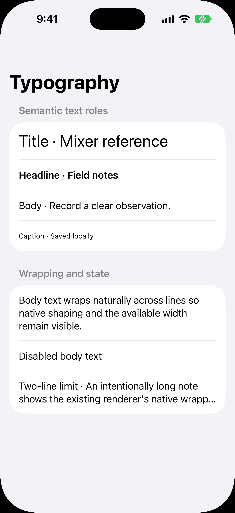
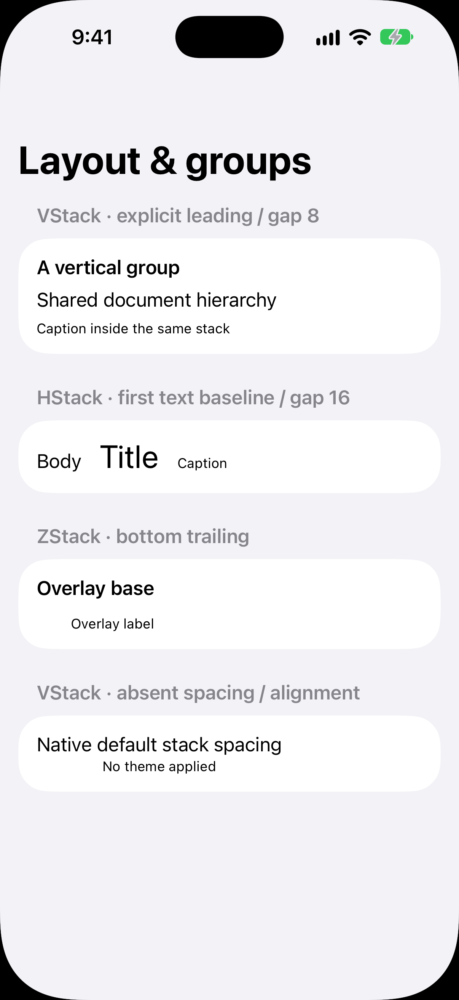

typography-light



Public explicit header.headline / Button.body / Toggle.body modifiers only. Hidden Latin one/two-line Text samplers measure actual layout. Candidate matching is bounded to this matrix; full preference table and physical parity are separate. Click original PNGs or native font exports.



